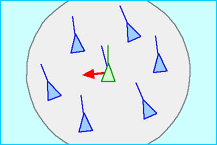
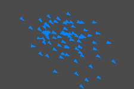

Boid Flocking Simulation
Installation
- Download the 'boids-vX.X.X.zip' file
- Extract the file
- Run 'main.exe'
- Go past any antivirus warnings, I promise this isn't a virus haha -- feel free to look at the source code if you're skeptical
Download PDF of this page here.
NOTE: It is against my recommendation to play the game and simulation through Trinket. I have included it for your convenience, but I highly suggest using the executable file for better performance and a better window! (You also cannot see certain text when using Trinket) View on Trinket
Background Information
In 1986 Craig Reynolds developed the boid flocking model using three properties that he calls steering behaviors. These three behaviors that control and define the model are separation, alignment, and cohesion. Each behavior is applied to the boid’s velocity vector as a force vector, and as such can be sufficiently modeled using the Euler method.1
 |
 |  |
|---|---|---|
| Separation1 | Alignment1 | Cohesion1 |
Separation gets the surrounding boids’ positions then moves the focused boid away from the others. Alignment gets the surrounding boids’
velocities then applies those to the focused boid to steer it in the same direction as others. Cohesion gets the surrounding boids’ positions then
moves the focused boid towards the average position. These calculations are performed on only the boids within a certain distance of the focused boid,
shown in the images above by the gray area. Reynolds calls this area the ‘neighborhood’ and boids within ‘local flockmates’. Although boids are a great
way to simulate flocking birds or fish in video games or movies, they miss detail that can be seen within flocking in the real world, such as the
fact that many bird flocks have a leader directing them.
Implementation in Python
To make this simulation, I decided to use Pygame due to the Python requirement and having some past experience with the library.
The boid class contains position, velocity, forces, and mass for the physics. The boid first calculates the flocking forces (separation, alignment, cohesion),
then adds those to the net forces of the boid. In the update function the acceleration is calculated by dividing the forces by the mass (which is by default set to 1),
the acceleration is added to the velocity, and the velocity is added to the position. This works quite well, but with all the boids in a single list I was only able to
get around 75 boids on the screen before the FPS (frames per second) started to rapidly drop from 60 down to 30, then lower as more boids were added. Consider
100 boids in the list, all 100 boids have to loop through each other, meaning every single frame there are 100*100 = 10,000 loops being run through. Now, say we
have 1,000 boids, each has to loop through all others, meaning every frame there are 1,000 * 1,000 = 1,000,000 loops being run through. You can see why this is a
huge performance problem. In order to solve this issue, I switched the list to a dictionary and put sub dictionaries within the main one. Each sub dictionary
corresponds to a grid cell on the screen, and each frame the boid checks which cell it is currently in. The boid only loops through the cell it is currently in
to determine boids that are currently near it, which increases the FPS by 0-25 depending on how many boids are in each section. This is essentially splitting
it into what the game development world likes to call ‘chunks’.
Numpy is a great library for mathematical calculations, but along with the functionality comes a lot of bloat. I was using Numpy for a while when first
developing the simulation, but I eventually found it was the source of possibly 30-40 FPS loss. This came primarily from the ‘norm’ function from Numpy’s
‘linalg’ sub library. As a solution, I created my own normalize function, which contains a lot less bloat than Numpy’s, resulting in increases of up to 40
FPS. The biggest performance improvement that can be done with boids is by using compute shaders, but since Pygame does not have access to the GPU this cannot
be implemented.
Results
My project ended up breaking down into two different parts: a game and a simulation. Both are in the same exe file, you can just navigate through the menu
to select the one you want. The simulation is a boid flocking simulation with optimizations
where you can test your FPS against how many boids you can have on the screen, and the game is a small combat-based wave defense experience.
|  | |
|---|---|
| Wave Defense Game | Flocking Simulation |
The simulation turned out quite well. I am able to get up to 200 boids at once before the FPS drops below 60 on a Ryzen 7 5800X3D CPU.
The game is not exactly how I imagined it initially, but I eventually was able to get it to a place that I am happy with. It was originally meant to have
many more upgrades, abilities, and enemy types, but I ended up running out of time. There are also some uncommon bugs that may show up
here and there, but shouldn't affect gameplay too harshly. I hope you will give both a try yourself!
Conclusion
Boids are the 'creatures' that make up the flocking simulation created by Craig Reynolds in 1986. A boid must adhere to three rules: separation, alignment, and
cohesion. Together these rules create a realistic flocking simulation that can be used in movies, TV shows, and video games to project a realistic simulation
of a flock of birds or a school of fish, but to be used extensively in video games
the use of compute shaders is required, for which GPU access is needed. Boids have limitations, but are also able to be built upon due to their simplicity, and
as such have much potential within the digital world.
References
- Reynolds, Craig. “Boids.” Red3d, 1995, www.red3d.com/cwr/boids/.
- Lague, Sebastian. “Coding Adventure: Boids.” YouTube, 26 Aug. 2019, www.youtube.com/watch?v=bqtqltqcQhw&t=118s.
- The Coding Train. “Coding Challenge #124: Flocking Simulation.” YouTube, 11 Dec. 2018, www.youtube.com/watch?v=mhjuuHl6qHM.
- Gavin. “How Do You Detect Where Two Line Segments Intersect?” Stack Overflow, 28 Dec. 2009, stackoverflow.com/questions/563198/how-do-you-detect-where-two-line-segments-intersect.